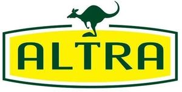

Trade Mark Journal No.2025/012 21 March 2025
WO0000001830015 (5,29,30)
Office of origin: Australia
Date of International Registration:13 November 2024
Date of designation in the UK:
13 November 2024

- Class 5
- Nutritional supplements; bee glue (propolis) dietary supplements; antioxidants (dietary supplements); albumin dietary supplements; casein dietary supplements; cod liver oil; colostrum supplements; dietary food supplements; royal jelly dietary supplements; vitamin supplements; probiotic bacterial dietary supplements; plant extracts (dietary supplements); mineral dietary supplements; fibre supplements; edible fish oil (cod liver oil) being dietary supplements; dietary supplements with a cosmetic effect; dietary supplements for human beings; dietary protein supplements; dietary supplements; dietary nutritional supplements; ginseng (dietary supplements); ginseng capsules (dietary supplements); ginseng extract (dietary supplements); herbal dietary supplements; lecithin dietary supplements; non-carbohydrate dietary supplements; pollen dietary supplements; powdered whey protein being dietary supplements; protein dietary supplements; whey protein being dietary supplements; yeast dietary supplements; enzyme dietary supplements; royal jelly (nutritional supplement).
- Class 29
- Dried vegetables; dried milk; dried whey products; edible flowers, dried; edible jellies made from milk and vegetable products; edible seeds; extracts of meat; fish extracts; flavored nuts; fruits, dried; milk powder (other than for babies); milk powder replacers; mixtures of nuts and dried fruits; protein milk; skimmed milk powder.
- Class 30
- Candies; candy bars; cereal bars; chewing gum; chocolate; chocolate bars; chocolates; chocolate coating; coffee; dairy chocolate; edible honeycombs; flavoured coffee; grain based snack bars; high-protein cereal bars; honey; instant coffee; instant powder for making flavoured coffee-based, tea-based or cocoa-based drinks; natural sweeteners; oat flakes; tea; tea essence; herbal tea (other than for medicinal use).
Ultra Nutraceuticals (Australia) PTY. LTD.
Representative: Hongxin Li, 4 Vine Court, Glen Waverley VIC 3150, AUSTRALIA